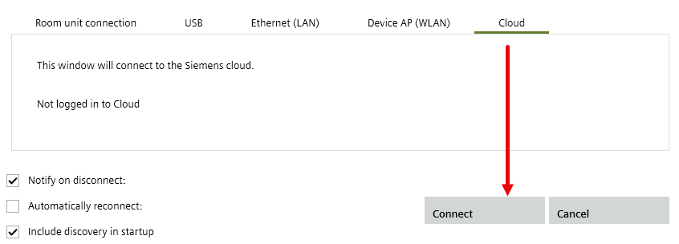
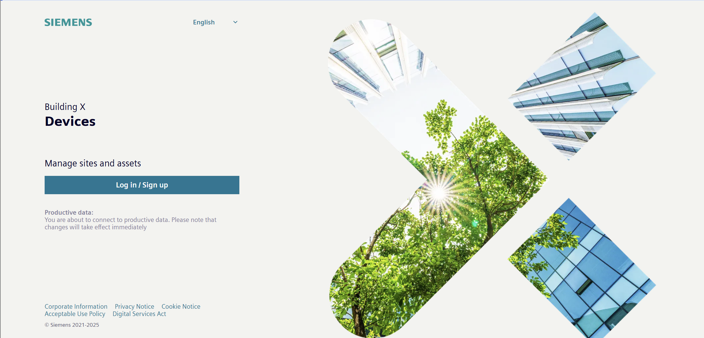

Advanced access required
The following workflows cannot be started directly via ABT Site Startup > Go to Web interface. Possible routes for performing these workflows are:
- Open a Web browser outside of ABT Site and enter the IP address in the address and search bar, for example, 136.156.102.200 of the device.
Note: The Launch in external browser link opens a session in localhost and cannot be used for these functions. - Cloud connection from ABT Site
- Building X Cloud connection
https://assets.bpcloudapps.siemens.com/#/login

